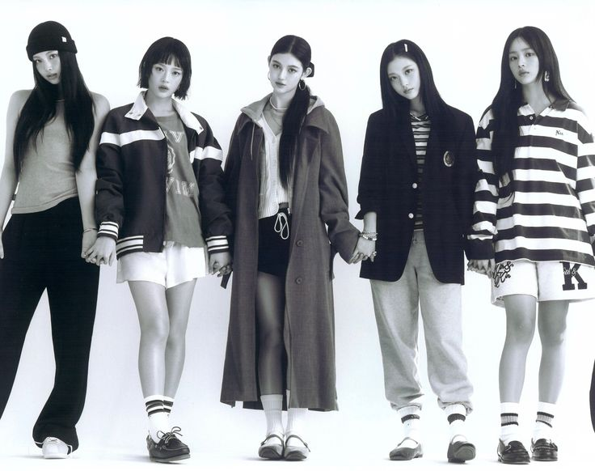

Keunikan Musik dan Gaya Visual NewJeans yang Membuatnya Menonjol
 Salah satu aspek yang membuat NewJeans benar-benar berbeda dari grup K-pop lainnya adalah pendekatan mereka terhadap musik, yang menghadirkan nuansa unik dan segar di tengah kompetisi industri yang semakin ketat. Lagu-lagu mereka seperti “Ditto,” “OMG,” dan “Cookie” menampilkan perpaduan genre yang menarik, seperti R&B, pop, dan elemen retro, menciptakan identitas musik yang sulit untuk diabaikan. Alih-alih mengejar tren K-pop yang seringkali identik dengan produksi megah, aransemen rumit, dan tema futuristik, NewJeans memilih pendekatan yang lebih ringan, santai, dan relatable. Strategi ini memungkinkan mereka untuk menciptakan hubungan emosional yang mendalam dengan pendengar, baik dari kalangan penggemar K-pop maupun audiens yang baru mengenal musik Korea.
Lirik dalam lagu-lagu NewJeans sering menyentuh tema-tema sederhana yang sangat relevan bagi generasi muda masa kini, seperti cinta, persahabatan, dan perjalanan menemukan jati diri. Tema-tema ini disampaikan dengan cara yang jujur dan apa adanya, sehingga terasa otentik dan mudah dihubungkan oleh siapa saja. Misalnya, lirik lagu “Ditto” yang melibatkan nostalgia dan rasa rindu menciptakan emosi universal yang mampu menjangkau audiens dari berbagai latar belakang. Pendekatan mereka terhadap penulisan lagu ini menjadi alasan mengapa musik NewJeans diterima dengan hangat, baik oleh penggemar K-pop yang sudah lama mengikuti genre ini maupun pendengar baru yang mencari sesuatu yang segar dan berbeda.
Di samping musiknya, gaya visual mereka juga menjadi salah satu daya tarik utama yang membuat NewJeans menonjol. Dengan tampilan natural dan kasual, mereka menghadirkan kesan yang lebih membumi dibandingkan grup K-pop lain yang cenderung mengusung tema glamor dan perfeksionis. NewJeans sering memadukan elemen sederhana dengan energi muda yang segar, menciptakan estetika yang terasa lebih dekat dengan kehidupan sehari-hari. Hal ini bukan hanya memberikan mereka ciri khas yang unik, tetapi juga memperkuat koneksi dengan penggemar yang merasa gaya mereka lebih relevan dan bisa ditiru dalam kehidupan nyata.
Tidak hanya itu, video musik (MV) mereka juga menjadi salah satu elemen yang tak kalah penting dalam membangun citra unik NewJeans. MV mereka tidak hanya sekadar alat promosi, tetapi juga karya seni yang penuh makna. Sebagai contoh, MV “Ditto” menawarkan pengalaman visual yang indah dengan narasi yang kuat, menggambarkan cerita yang kompleks namun relatable. Sinematografi yang digunakan dalam MV ini memperlihatkan keahlian mereka dalam menggabungkan elemen seni dengan musik, menciptakan pengalaman yang memukau secara visual maupun emosional. Elemen-elemen seperti ini mempertegas identitas mereka sebagai grup yang tidak hanya fokus pada performa, tetapi juga pada kualitas artistik yang mereka tawarkan.
Kombinasi unik dari musik, lirik, gaya visual, dan produksi video musik berkualitas tinggi membuat NewJeans menjadi fenomena baru dalam K-pop. Mereka tidak hanya membawa pendekatan segar dalam genre ini, tetapi juga menciptakan standar baru tentang bagaimana sebuah grup idola dapat menyampaikan karya mereka dengan cara yang lebih personal, artistik, dan bermakna. Hal ini membuktikan bahwa NewJeans tidak hanya mengejar popularitas, tetapi juga ingin meninggalkan jejak yang lebih dalam di dunia musik dan budaya populer.